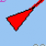
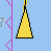
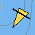
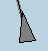
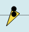
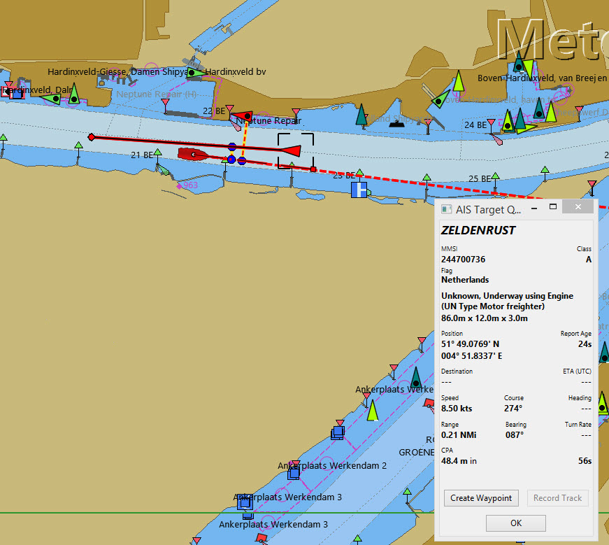

AIS

"AIS Pilotplug naar USB" kabel
Basis AIS ontvanger
|
OpenCPN instellingen
Om de beste prestaties te bereiken en te voorkomen dat het scherm volloopt moeten de AIS instellingen worden aangepast. Dit zal ertoe bijdragen dat het aantal onrelevante alarmen worden teruggebracht. |
Verbinding maken met de AIS
Een AIS-ontvanger kan op dezelfde manier worden aangesloten als de GPS. De gebruikelijke AIS-data snelheid is 38400, in plaats van 4800 baud rate. Een gemakkelijke weg is om een "AIS Pilotplug naar USB" kabel te gebruiken. Dit geeft je ook een GPS-positie (geen aparte GPS-functie nodig)
Instellen AIS objecten.
Opties Eigen Schip en AIS Objecten
AIS Targets
Typische instellingen worden weergegeven.

AIS object Informatie
rechtermuisklik
Over de tekst bewegen geeft de naam, MMSI-nummer en nationaliteit van het schip weer.

AIS objectgegevens … (Klasse B AIS)
Het schip waar de aandacht op is gevestigd wordt aangegeven met een onderbroken rechthoek.

AIS objectgegevens … (Klasse B AIS)

AIS objectenlijst…
Interpreteren van de AIS informatie
| AIS_Icoon | Informatie | AIS_Icoon | Informatie |
|---|---|---|---|
|
Een AIS Een SART melding is een distres alarm en is gelijk aan een “Mayday” bericht. Meer over AIS sart. |
.. |
De V-vorm geeft een klasse B object aan. Sleepboten en loodsboten werken heel vaak met Class B transponders. Deze zijn vaak speciaal ontworpen voor kleine commerciële boten, vissersboten en pleziervaartuigen. |
|
Icoon weergegeven wanneer het testen van een AIS-SART apparaat wordt uitgevoerd.. |
Doelstellingen moeten voldoen aan de Euro AIS Inland specificatie. |
|
|
Vliegtuigen die deelnemen aan zoek- en reddingsacties. |
|
Dit schip heeft de "Inland Blauwe vlag of bord" aangezet, dit is een onderdeel van de Europese, Inland AIS standaard. Het “Blauwe Vlag”-signaal, op de binnenwateren geeft aan dat het vaartuig een “stuurboord-stuurboord” passage of op een kruising aanvraagt. Dit blauwe signaal wordt handmatig aan/uit gezet door het betreffende schip. |
 |
Potentiëelgevaar. |
|
Een Aton, is een hulpmiddel om te navigeren, bijvoorbeeld een vuurtoren of een boei met een AIS zender. |
 |
Geen gevaar Niet geïdentificeerd (Reisdoel gegevens niet ontvangen) |
|
Een Aton, is een hulpmiddel voor de navigatie als aanduiding van objecten, die niet op de aangegeven plaats liggen. Als voorbeeld een boei uigerust met AIS die op drift is geraakt. |
|
Geen gevaar Niet geïdentificeerd (naam uit opgeslagen gegevens) |
|
Virtuele Aton, Virtuele aton is een hulpmiddel voor de navigatie, geen echte markering. Kan handig zijn voor een reeks van situaties. Een nieuw wrak is één voorbeeld. Further. |
|
Geen gevaar geïdentificeerd |
|
virtuele Aton (niet op zijn positie) Dit gezien in het "wild", maar het kan een configuratiefout zijn. (Oude stijl weergave.) |
 |
Verdwenen AIS object |
|
AIS basis station |
 |
Een schip die zijn fix positie heeft verloren . Wordt weergegeven op de laatst bekende positie. |
De volgende tagets worden alleen getoond als DSC berichten, GpsGate mesages, Radar of APRS berichten worden gemengd met de inkomende AIS stream, door gebruik te maken van, bijvoorbeeld een multiplexer. Meer op de volgende pagina’s. |
|
 |
Vaartuig niet onder commando. |
|
DSC Station. Alleen de DSC boodschap ontvangen. De positie bevat slechts graden en minuten van Breedtegraad en Lengtegraad |
|
Vaartuig met beperkte manoeuvreercapaciteit. |
DSC Station. DSC en DSE berichten ontvangen. Het DSE bericht bevat de ontbrekende decimalen van Breedtegraad en Lengtegraad.. Het resultaat is een veel accurater standpunt. |
|
|
Vaartuig beperkt door zijn diepgang. |
|
DSC Station zendt een noodsignaal uit. Behandel dit als een “Mayday” oproep. |
|
Vaartuig aan de grond |
|
GpsGate Buddy object. |
|
Vaartuig betrokken bij het vissen. |
|
ARPA objecten |
|
Hoge Snelheid- en draagvleugel vaartuigen.. Dit omvat Hydrofoils, Hovercrafts en laag vliegende vaartuigen die het als grondeffect gebruiken. |
|
AIS objecten |
Voor anker of afgemeerd. Wordt weergegeven wanneer de verzonden "Navigatie status" "voor anker anker" of "afgemeerd" is. Er is geen garantie dat deze status correct is, omdat deze handmatig wordt ingesteld op het uitzendende schip… |
|
…wordt geïllustreerd door dit schip. Let op de zwarte lijn op de gele cirkel. Dit geeft aan dat het vaartuig naar bakboord (links) gaat, ook te merken aan de vertraging van de weergave update. ROT - De mate van het draaien is beschikbaar in het "Ais Target Query" dialoogvenster, via het rechter klik menu. |


AIS voorbeelden

Een schip lijkt op dit moment van koers te veranderen en lijkt 'onze' vaarweg in te varen.
rechtsklik

Het vaartuig is geïdentificeerd.

'Zeldenrust' is een potentieel gevaar en heeft een waarschuwing veroorzaakt op basis van de instellingen die zijn ingevoerd in OpenCPN.
Lengte pijl COG (koers over de grond) voorspelling is ingesteld op drie minuten.
De rode verlengingslijn van de COG (koers over de grond) voorspelling helpt met een schatting van de tijd aan de CPA, als doel zoekopdracht niet is gebruikt.
De geschatte posities van de schepen bij CPA worden weergegeven door blauwe stippen.
De gele gemarkeerde lijn geeft de afstand weer bij de CPA.

"Zeldenrust" is verder opgedraaid en zal nu aan onze bakboord zijde passeren. CPA 48,5 m


"Zeldenrust" is voorbij en de vaarweg is weer vrij.
Het schip bij de Neptunus reparatie werf lijkt een potentieel gevaar, het is echter afgemeerd.